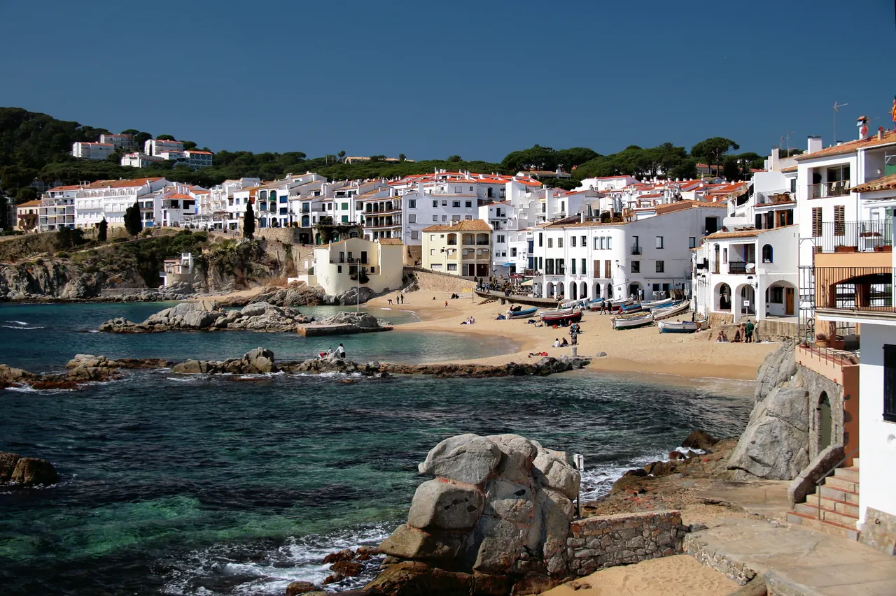
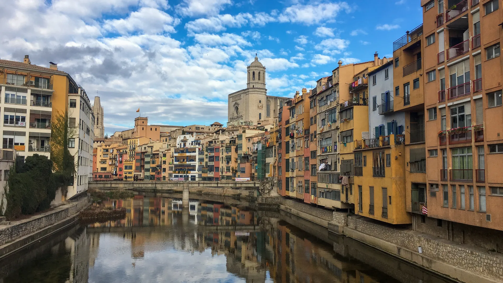

Calella de Palafrugell
소나무 덮인 바위와 투명한 만 사이의 어촌이다.

| 항목 | 평가 |
|---|---|
| 여행 적합도 | ★★★★★ Jason·Julia의 생활형 여행에 최적화 |
| 예산 체감 | 중 |
| 일정 강도 | 모든 일정을 차량으로 연결하므로 높음 |
| 예약 핵심 | Bàscara 숙소 확정 · 렌터카·주차 P0 · Peralada 실제 예약 없음 |
| 우천 전환 | Girona 실내와 Collioure 체류 축소 |
| Bàscara는 Girona 시내 숙소가 아니다. Girona 구시가지는 차량으로 따로 왕복해야 하므로 도착일의 대성당·성벽·Onyar 강변을 모두 고정하지 않는다. 대신 Collioure·Cadaqués 해안 우회와 Tossa·Sant Feliu·Pals·Peratallada 축의 출발·귀환 거점으로 사용하며 정시 출발과 선택 일정 삭제 기준을 둔다. |
| 장소·경험 | 판단 | 이유 |
|---|---|---|
| Calella de Palafrugell | 필수 | 코스타브라바 대표 어촌 |
| Begur | 대체 | Pals 대체 후보, 추가 방문 금지 |
| Figueres | 비추천 | 달리 미술관을 넣으면 현재 일정이 과밀 |

소나무 덮인 바위와 투명한 만 사이의 어촌이다.

지로나 성벽은 두 시기의 것이 겹쳐 있다.

이름부터 설명이다.
| 장소 | 등급 | Jason·Julia에게 추천하는 이유 |
|---|---|---|
| Girona Cathedral | 필수 | 도시의 종교·건축 중심 |
| City Walls | 필수 | 도시구조와 전망 |
| Onyar 강변 | 필수 | 저녁 산책과 대표경관 |
| Jewish Quarter | 우선 추천 | 지로나의 역사적 정체성 |
| Jewish History Museum | 선택 | 실내 역사 이해, 시간 필요 |
| Arab Baths | 선택 | 30분 내외의 밀도 높은 건축 |
| Collioure | 필수 | 프랑스 카탈루냐·야수파·해안시장 |
| Peralada | 우선 추천 | 귀로에 맞는 성곽·컬렉션 |
| Pals | 우선 추천 | 전망형 중세마을 |
| Peratallada | 필수 | 석조마을·점심·생활감 |
| 등급 | 장소·경험 | 이 가이드북에서 추천하는 이유 |
| --- | --- | --- |
| 필수 | Girona 성벽과 대성당 권역 | 도착일 저녁과 이른 아침으로 나눠 도시의 높이와 골목을 읽는다. |
| 우선 추천 | Collioure | 시장·항구·야수파 풍경을 한 번에 경험하는 가장 성격이 뚜렷한 당일치기다. |
| 우선 추천 | Collioure–Cadaqués | 오전 장날과 해안 쪽 우회를 연결한다. |
| 우선 추천 | Tossa–Sant Feliu–Pals–Peratallada | 해안축과 귀로 마을을 압축해 연결한다. |
| 대체안 | Peralada·Calella de Palafrugell | 본 일정에서 제외하며 실제 예약·취소를 가정하지 않는다. |
| 시간·역할 | 추천 | 이용법 |
| --- | --- | --- |
| 아침 | Bàscara 숙소 주변 산책 | 농촌 거점의 조용한 아침을 쓰고 Girona 방문은 별도 차량 동선으로 본다. |
| 점심 | Peratallada | 석조 골목 산책과 식사를 한 장소에 묶어 이동횟수를 줄인다. |
| 저녁 | Bàscara 복귀 후 간단식 | Girona에서 식사하면 숙소까지 다시 운전해야 하므로 음주와 늦은 귀환을 피한다. |
| 스케치 | Onyar 강변 또는 Calella 만 | 색면과 수평선이 분명해 짧은 스케치에 적합하다. |
13:00 점심 후 15:15 출발 시각 보호
시장 조달 또는 항구권 생선 식당
점심 후 짧게 걷고 이동
바르셀로나는 대도시였다. 니스부터는 프랑스다. Bàscara 농촌 거점 3박은 그 사이에 낀 구간이 아니라, 이 여행에서 유일하게 "국경이 흐릿한 곳"을 보는 시간이다.
피레네 동쪽 끝은 지도 위에서만 스페인과 프랑스로 갈린다. Day 2에 넘어가는 콜리우르는 행정상 프랑스지만 표지판에 카탈루냐어가 병기되고, 요리도 카탈루냐 계열이다. 국경을 넘었는데 음식이 안 바뀌는 경험 — 이것이 이 구간의 핵심이다.
Day 3의 석조마을들은 반대 방향이다. 팔스·페라타야다·칼레야는 서로 20~30분 거리인데, 하나는 요새 마을, 하나는 영주 저택 마을, 하나는 어촌이다. 20분 이동으로 사회 구조가 바뀌는 밀도를 보는 날이다.
| 항목 | 확정 내용 |
|---|---|
| 여행 성격 | Bàscara 농촌 숙소를 차량 거점으로 Girona·Collioure·Empordà 연결 |
| 숙박 | Bàscara 3박 · 예약 확정 · 2026-09-01~09-04 |
| 확정 숙소 | Airbnb · 바스카라의 B&B — Plaça de l'Església, 6, 17483 Bàscara, Girona, Spain |
| Day 1 | Sitges → Girona 축소 방문 또는 Bàscara 선체크인 |
| Day 2 | Bàscara → Collioure → Cadaqués → Bàscara |
| Day 3 | Bàscara → Tossa de Mar → Sant Feliu de Guíxols → Pals → Peratallada → Bàscara |
| Day 4 | Bàscara 체크아웃 → 니스 이동 |
| 필수 예약 | 없음 — 페랄라다 투어는 일정에서 제외(DEC-A01). 필요 시 저녁식당만 |
| 선택 예약 | 지로나 대성당 통합권, 콜리우르 왕궁 |
| 하루 피로도 | Day 1: 4 / Day 2: 4 / Day 3: 4 / Day 4: 이동방식에 따라 4–5 |
| 핵심 위험 | 렌터카 필수, 숙소·목적지 주차 재확인, 국경 통과, 야간·음주운전 방지 |
| 우천 대체 | 지로나 실내박물관·페랄라다 박물관·콜리우르 왕궁 중심 |
| 날짜 | 요일 |
| --- | --- |
| 9/1 | 화 |
| 9/2 | 수 |
| 9/3 | 목 |
| 9/4 | 금 |
Day 1
Sitges
↓
Girona 축소 방문 또는 Bàscara 선체크인
↓
Bàscara 확정 숙소
Day 2
Bàscara
↓ 출발 전 지도 재확인
Collioure
↓ 약 1시간 5분
Peralada
↓ 출발 전 지도 재확인
Bàscara
Day 3
Bàscara
↓ 출발 전 지도 재확인
Pals
↓ 약 15분
Peratallada
↓ 약 25–30분
Calella de Palafrugell
↓ 출발 전 지도 재확인
Bàscara
실제 주행시간은 교통·주차·국경 상황을 포함해 10–20분 여유를 둔다.


{kind=link}